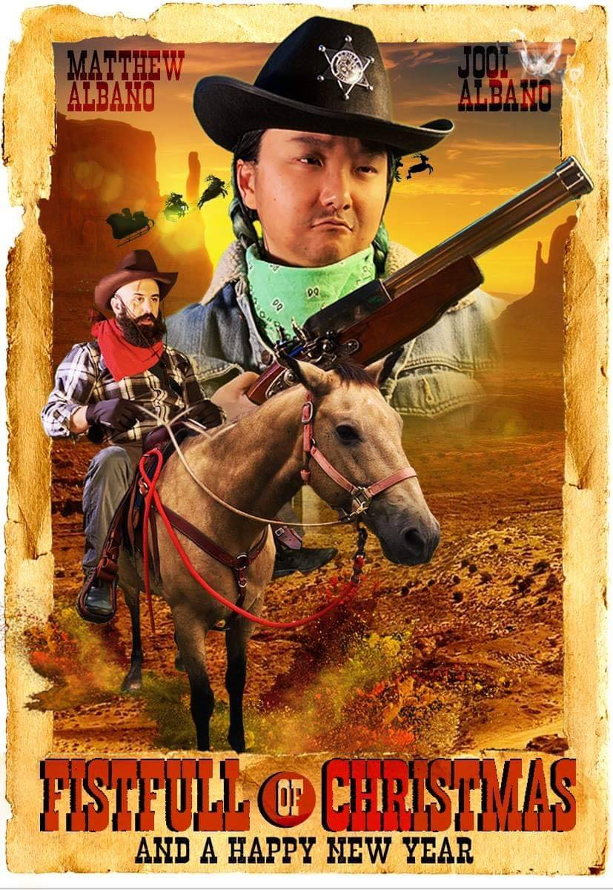

click the image to go to the instagram
Matt picked up his brush again when he stepped on a toy robot in his parents basement. What started as a little robot paintings and doodles became impressions of cityscapes, abstracts, lights and colors.
His unique vision of contrasting tones and hues of color comes from the fact he was born color blind. He works tirelessly to reflect his own view in his representation of colors with his own filter over it. His paintings also have his own flow,with many shapes harmoniously joining together or fluently changing the directions. In many of his works you can find underlying lines and figures.
Matt also works as a camera assistant, and he tries to balance his time and attention between his multiple passions and intersts, all while enjoying a jolly time with his wife in their Sunnyside Home.
Matt and Jooi